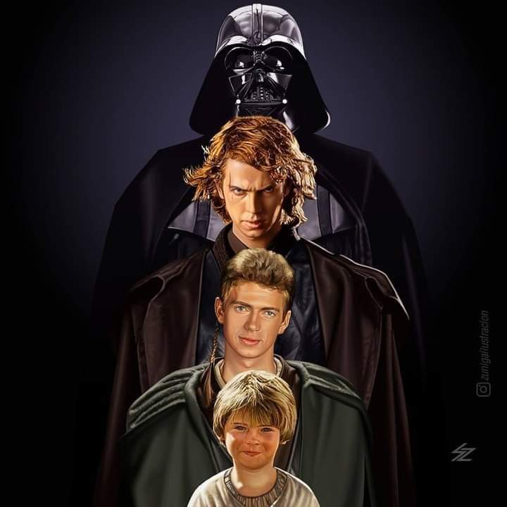

Anakin Skywalker Biografía

Anakin Skaywalker: Nacido en el planeta Tatoine de su madre Shmi Skaywalker sin que esta tuviese relaciones con hombre alguno,
siendo los dos esclavos de Watto, aunque antes pertenecían a Garrdulla la hut hermana del famoso gánster hut Java.
Por ello a sus diez años de edad cuando se encontró con el maestro de jedi Gi Jon Jin, este último pensó que Anakin era el elegido
de la fuerza de acuerdo con una antigua profecía de los jedis. Ya de pequeño demostró una gran conexión con la fuerza,
fruto de ello está el hecho de que era el único humano capaz de correr en las peligrosas carreras de vainas.
Durante su encuentro con el maestro jedi sucedieron varias cosas la primera y más notoria, que gracias a su habilidad en las carreras
de vainas gano su libertad. Todo esto con trasfondo de una incipiente guerra orquestada por Darth Sidius un lord de los Siht,
enemigos acérrimos de los Jedi. También fue llevado al templo jedi para que entrenara como futuro caballero jedi.
n un principio lo rechazaron pero tras la muerte de Gi Jon Gin, lo aceptan convirtiéndose en padawan de Obi Wan Kenoby,
que hasta ese momento lo había sido de Gi Jon.
Años después siendo padawan de Obi Wan, recibiría la orden de proteger junto a su maestro a la senadora y antigua reina
del planeta Naboo Padme Amigdala, de la que ya desde la primera vez que la conoció en su planeta natal Tatoine estuvo enamorado de ella.
Al descubrir un asesino cambiaformas, mientras Obi Wan investiga los hechos, Anakin viaja de incognito junto a Padme, con el fin de no llamar la atención.
Pero unos sueños premonitorios hacen que viajen de Naboo a Tatoine, para salvar la vida de la madre del joven jedi.
Cuando llegan se enteran que Shmi ha sido vendida por Watto a un granjero de humedad llamado Lars, pero que un reciente ataque de los moradores de las arenas,
han dejado tullido a Lars y Shmi ha sido capturada. Sin pensarlo Anakin sale en busca de los Tusken y cuando da con ellos Shmi muere en sus brazos, provocando
que por un momento el joven se pase al lado oscuro de la fuerza. Mientras Obi Wan descubre un ejército clon que ha sido creado a partir de un cazarrecompensas
llamado Jango Fett, que es quien ha contratado al asesino cambiaformas que intentó asesinar a Padme. Al cual Obi Wan sigue hasta el planeta Geonosis al
cazarrecompensas y descubre que el antiguo maestro de su maestro, el Conde Doku, ha caído en el lado oscuro de la fuerza haciéndose llamar Darth Tiranus.
Obi Wan en un intento de llamar al templo jedi en Corruscant, al tener su transmisor de largo alcance estropeado contacta con Anakin, cuando ven la transmisión
él y Padme deciden viajar a Geonosis, porque saben que los jedi podrían no llegar a tiempo para salvar a Obi Wan que está en manos de Darth Tiranus.
Pero también caen capturados y llevados a una arena donde se tienen que enfrentar a unas bestias que los geonosianos utilizan para sus espectáculos cirquenses
parecidos a los de los romanos. En el último momento llegan los jedi con Mace Windu a la cabeza por una parte y el maestro Yoda por otra a la cabeza
del ejercito clon, dando inicio así con esta primera batalla a las guerras clon. En un duelo entre Obi Wan, Anakin y el Conde Doku este los vence cortándole a Anakin su brazo izquierdo,
si no llega a ser por Yoda los dos hubieran muerto a manos de este. Más tarde Anakin acaba casándose en secreto con Padme, ya que los jedi tienen prohibido
tener familia.
Ya muy avanzadas las guerras clon en una maniobra de Darth Sidius, que es la identidad secreta del Canciller Supremo Palpatine, Anakin logra derrotar a Doku y lo mata cuando esta desarmado
y con sus extremidades superiores cortadas. Iniciando así su caída definitiva al lado oscuro. Para acelerarla aún más Palpatine consigue que Anakin sea nombrado su portavoz en el alto consejo Jedi.
Pero este último sospechando que es una manera de controlar al consejo, le niega al joven Skywalker el rango de maestro, que sería condición imprescindible para pertenecer a este.
Mientras los espías de la república descubren la ubicación del general droide separatista, el General Greivus, y envían a Obi Wan
tras el quedándose Anakin en Corruscant con el fin de vigilar e informar de los movimientos de Palpatine. Mientras las pesadillas que tuvo con su madre vuelven pero esta vez con Padme,
que además está embarazada. No encontrado consejo en nadie de la orden Jedi, Anakin cada vez más desesperado hace oídos a las promesas de Palpatine que le habla
de la tragedia de Darth Plagies el sabio, según la cual podía influir en los midiclorianos hasta el punto de poder crear vida.
Mientras Obi Wan se enfrenta al general Greivus y lo vence. Mace Windu, cuando esto pasa ordena a Anakin ir a decírselo al canciller Palpatine,
es ahí donde descubre Anakin la verdad sobre este y va a decírselo a Mace; este le pide que lo espere en la cámara del alto consejo jedi.
Pero la manipulación de Palpatine surge efecto y desobedeciendo a Mace Anakin corre a impedir que los jedis puedan lastimar al canciller.
Acaba teniendo un duelo con Windu y lo vence cortándole las manos, esto hace que se convierta en Darth Vader.
El canciller ahora convertido en emperador le ordena que termine con la orden jedi, dando así comienzo a la orden 66.
Después de esto lo envía al planeta Mustafar para que acabe con los lideres separatistas. Obi Wan enterado de todo lo sucedido en el templo jedi,
va a ver a Padme ya que sabe que es la única que puede convencerlo de regresar al lado luminoso, pero esta se niega debido a su amor por él.
Entonces Obi Wan se mete en la nave de esta a escondidas. Cuando Anakin descubre a su antiguo maestro, estrangula a Padme con la fuerza e inicia un duelo
a muerte con Obi Wan. Esto los lleva hasta un rio de lava encima de unos droides recolectores.
El duelo termina cuando Obi Wan accede a un terreno más elevado y Anakin cegado por la ira y el odio lo ataca. En un rápido movimiento, su maestro,
le corta las dos piernas y el brazo orgánico que aún le quedaba. Obi Wan le recrimina todos los errores que ha cometido, para luego abandonarlo a su suerte en la ladera de obsidiana.
Anakin le dice que le odia y a continuación estalla en llamas. Mientras tanto Obi Wan traslada a Padme al puesto medico de Polis Masa donde da a luz a Luke y Leia,
los futuros héroes de la rebelión contra el Imperio Galáctico de Palpatine. Padme muere por el intenso sufrimiento que le ha provocado la conversión de Anakin al lado oscuro.
Mientras el emperador ha recogido el calcinado cuerpo de su aprendiz anteriormente conocido como Anakin Skaywalker y ahora como Darth Vader
y lo ha reconstruido cibernéticamente dándole el clásico aspecto con su brillante armadura negra.
Curiosidades:
El actor que iba dentro del traje, no era el que le ponía la voz a Darth Vader ya que el casco hacía que se distorsionase su voz.
La parte superior del casco de Darth Vader está inspirado en el casco samurái, pero la parte de los ojos y el vocalizador en una máscara
de gas alemana de la II Guerra Mundial.
El nombre Darth Vader es una conjunción de inglés y danés, siendo Darth una deformación de la palabra Dark que significa oscuro y Vader
que en danés significa padre, así que literalmente Darth Vader significa padre oscuro.
El apellido original de Anakin iba a ser Starkiller es decir asesino de estrellas.